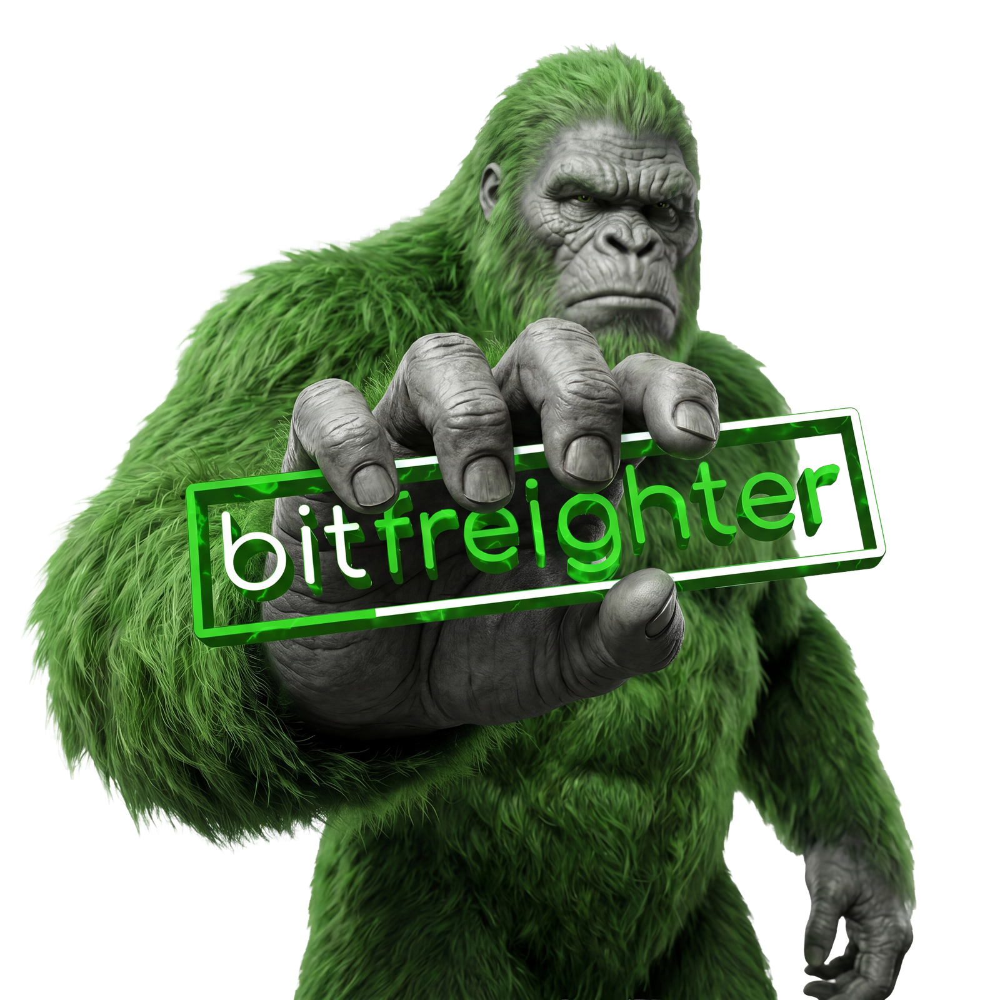
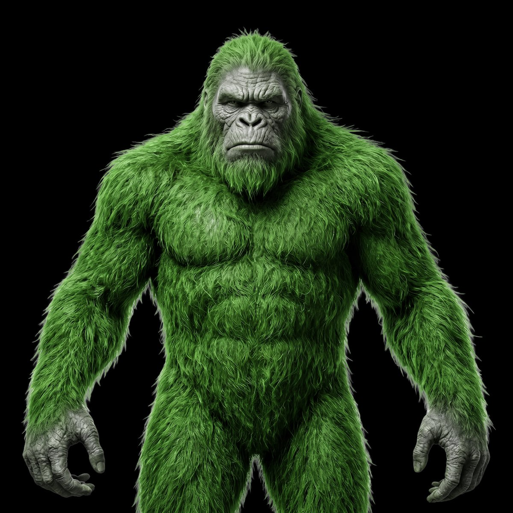

CHAMPION × BITFREIGHTER: CASE STUDY
An EDI/API and automated quoting platform with serious technology and a quiet brand. We rebuilt the brand around a yeti named Big Freighto and shipped a custom tracking tool to replace bot-polluted clicks with real intent signal.

Strong product. Quiet brand.
Bitfreighter sells managed EDI and freight-quoting software to brokerages and carriers. The technology is excellent. The market awareness was not.
The mandate was straightforward in shape and difficult in practice: build awareness with a small, hard-to-reach buyer, generate qualified pipeline, and deliver high-intent prospects directly to the sales team, without relying on the conventional B2B forms 97% of website visitors will never fill out.
The product was leading the brand by a mile.
The site read as a templated SaaS homepage. The brand video was a stock animation. Neither suggested the company building the most advanced rules engine in freight quoting.

Big Freighto. Best kept secret in freight.
The mascot was already there, buried in a graphic from an old golf tournament. A green-furred yeti with a club bag. We pulled him out, gave him a name, and built a world around him.



Big Freighto lives in a retro-futurist America. The world around him is black and white. He is the only thing in color. He is what happens when a modern technology arrives in an analog industry: the lights come on, the systems wake up, the future shows up early.
Bigfoot is the best-kept secret in American folklore. Bitfreighter is the best-kept secret in freight. The metaphor did the heavy lifting. We just made it visible.


A character with a job to do.
The brand system rolled across video, web, sales decks, and ad creative, all carrying the same world, the same character, and a single voice.

Site, rewritten & redesigned.
The new homepage opens with a single line, The future of freight connection, and one image: Big Freighto cradling the integration ecosystem. WestRock, Coca-Cola, Anheuser-Busch, Chewy, Kraft Heinz, Oracle, Optym, McLeod, Turvo, MercuryGate. The proof points are the network.
Six product surfaces, one nav, one tone. Less copy, more confidence.
Outreach, reimagined.
Earlier emails carried four value props at once. The new ones carry one each: a single problem, a single landing page, a single demo video that shows exactly how Bitfreighter solves it.
Seven emails in a sequence. Seven dedicated landing pages. Each one a purpose-built proof point, not a repurposed marketing site.
The shift matters because of what comes next: when a prospect picks a landing page, they tell us which problem they actually have.

A full sales-enablement system, end to end.
The premise: paid media alone does not produce sustainable B2B ROI, and cold email reply rates have dropped roughly a point a year for three years running. Used together as a sales-enablement system, not isolated conversion tactics, the same channels can shorten the sales cycle and hand prospects to the sales team at an advanced stage.
What worked.
Pure-awareness paid media seeded the buyer with seven to ten impressions before any direct ask. When an account spiked above-average ad engagement, the system fast-tracked them into outreach early. Cold emails opened soft. An info sheet on the table, not a meeting on the calendar, which kept reply rates above category benchmark.
We couldn't buy it. So we built the Watcher.
Bot-prefetched clicks make every cold email campaign look like a hit. 85% open rate. 30% click rate. Zero opportunities. Half the click sessions flagged as bots, dwell times under ten seconds, no real signal anywhere.
We went looking for an off-the-shelf tool that could separate humans from link-checkers and tell us which value prop a prospect actually engaged with. Nothing on the market did the job.
So we built it. The Watcher records page-by-page behavior on every campaign landing page, resolves session identity to a named contact, filters bot traffic, and surfaces the prospects who are genuinely engaged, to the sales team, in real time.

Want a system like this?
Champion Digital Media builds brand and demand systems for B2B companies whose product is ahead of their marketing. If that sounds familiar, let's talk.
Book a call